Sueca Drink — teste A/B/C de prints (pt-BR)
Três tratamentos gerados pela API da OpenAI (gpt-image-2) com o prompt e as referências do fluxo /gpt-refs, cortados centrados em cada celular, com a UI das telas e os títulos em português. Só pt-BR por enquanto, pra validar as imagens; os outros 11 idiomas e o 6,5" de todos saem depois do OK. Tudo que aparece existe na 41.0.0 (no ar).
O que decidir
- Quais tratamentos seguem (A, B, C) e se algum precisa de ajuste de arte ou título.
- Com o OK: gero os outros 11 idiomas (títulos + UI das telas) em 6,9" e 6,5" (+ 5,5" no en-US) e subo o PPO.
Controle — o que está na loja hoje (pt-BR, 41.0.0)
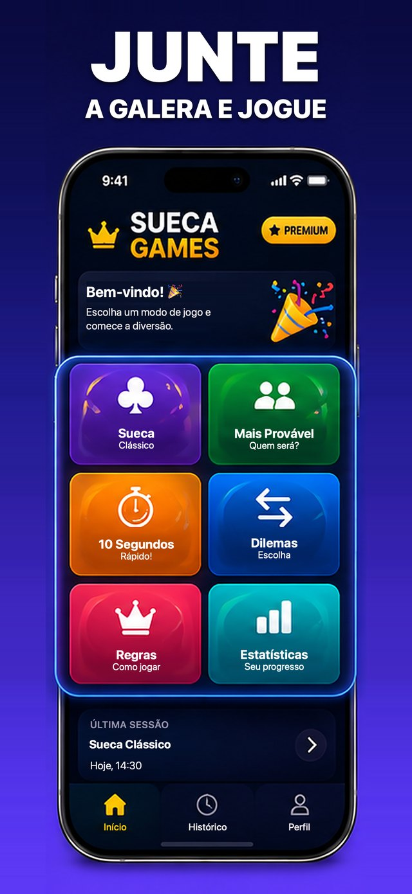
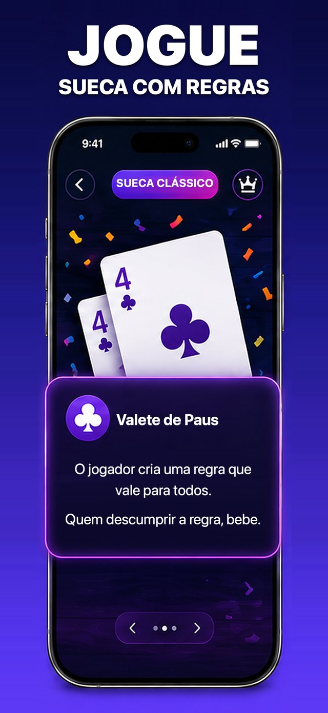
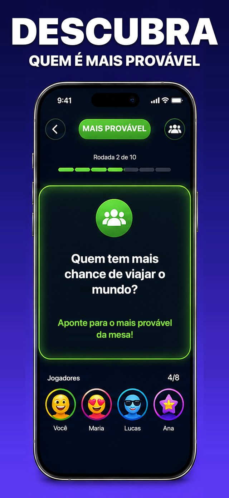
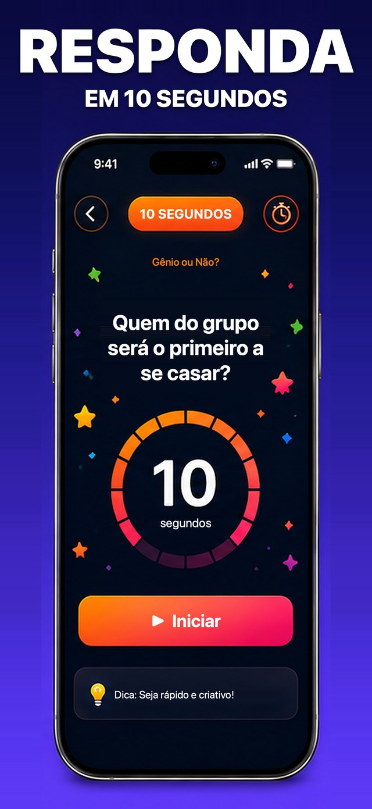
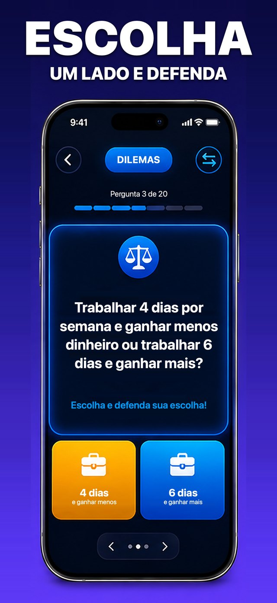
- Neon roxo, ordem home > Sueca > Mais Provável > 10 Segundos > Dilemas.
A — o jogo de cartas que todo mundo conhece, no bolso
Sueca (carta = regra) no print 1, depois Mais Provável e Missão Secreta. Mesa de madeira à noite, tela escura, vinho e creme do ícone, cartão ampliado para fora do celular nos prints 1-3.

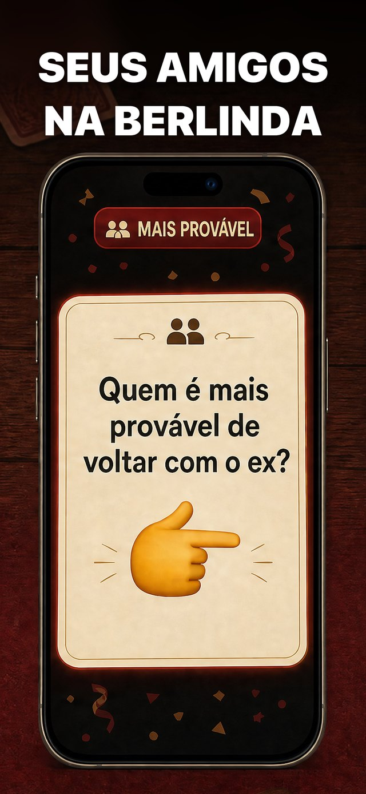
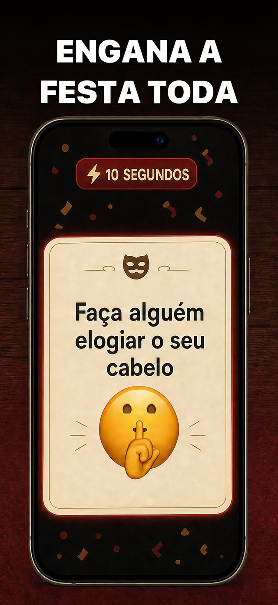
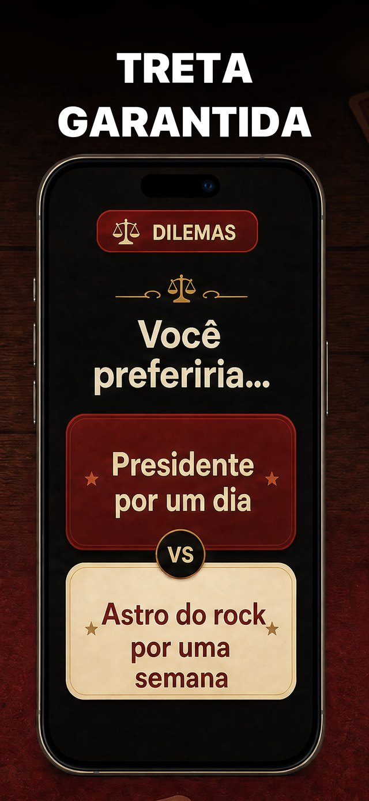
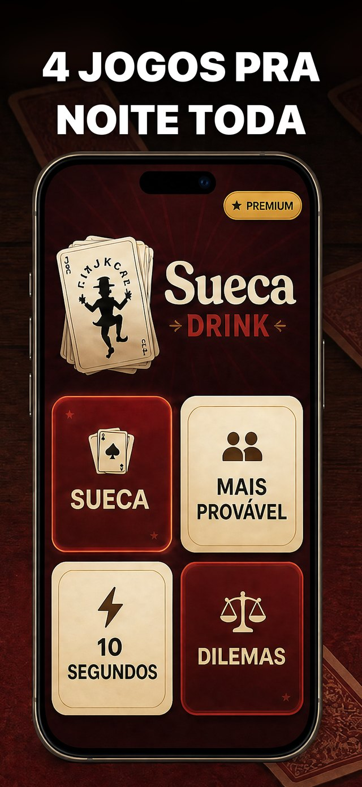
- 2ª geração escolhida: a 1ª não trouxe o cartão ampliado.
B — as perguntas que fazem o grupo rir
Vende o resultado: Dilemas (patos gigantes x cavalo pequenino), Casa/Beija/Mata e 4 jogos em 1. Tela clara, terraço ao entardecer, celulares limpos com brilho pastel atrás.
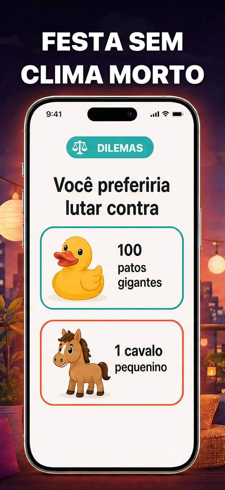
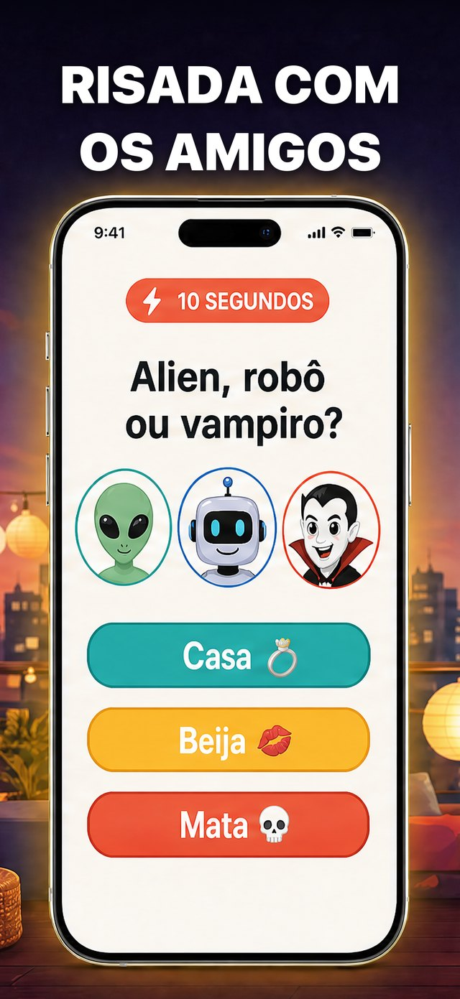
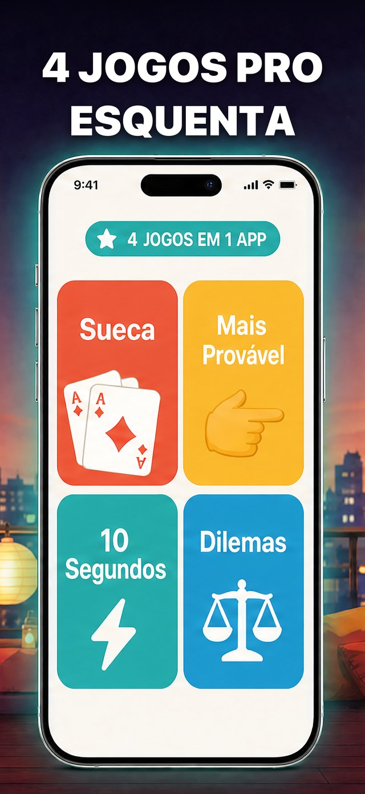
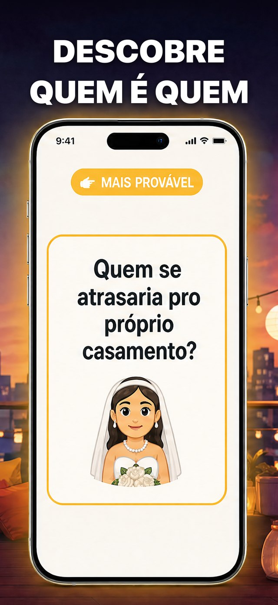
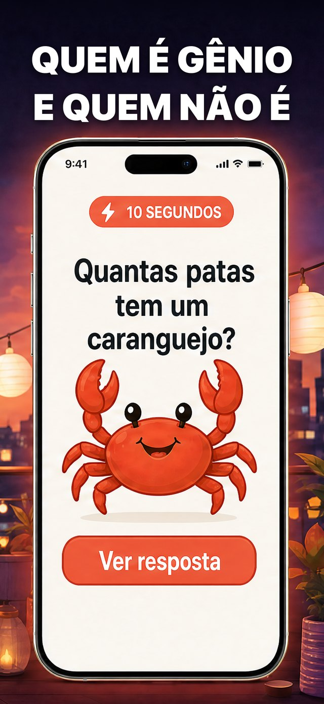
- Dois textos de tela encurtados pra não encostar na arte; o 'DILEMAS' do print 1 foi redesenhado por código (a IA quebrou o E).
C — desafios rápidos com o Coringa
Coringa do ícone vira personagem; Desafio Relâmpago, Quiz e Premium de pagamento único nos 3 primeiros. Fundo vermelho da marca, cartas creme gigantes.
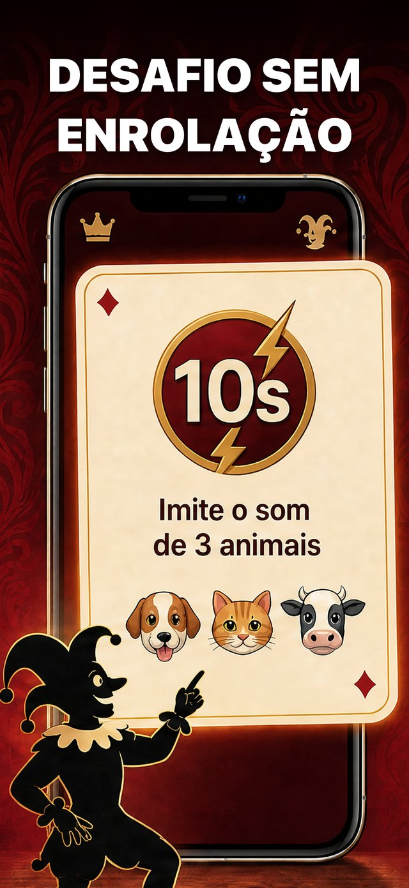
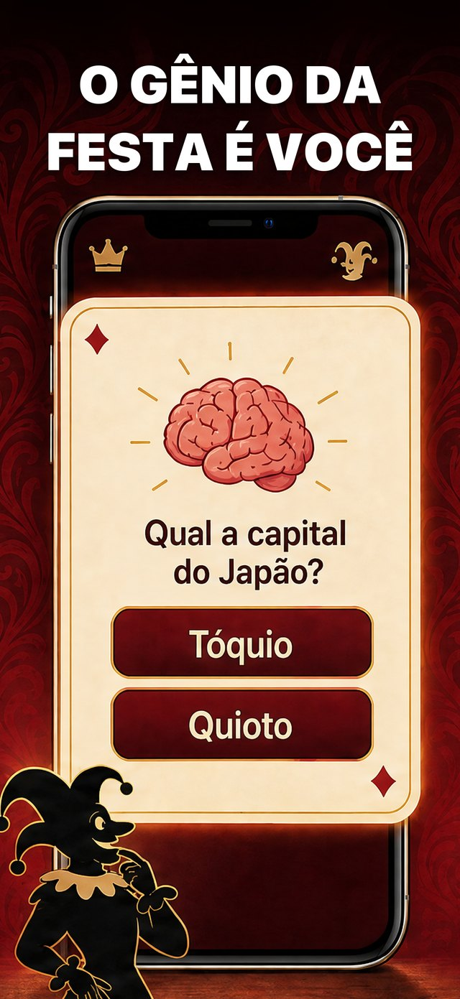
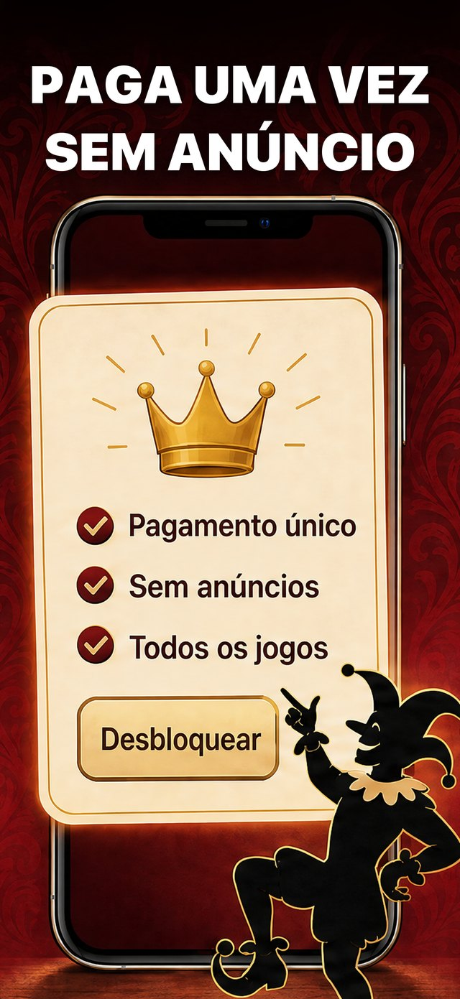
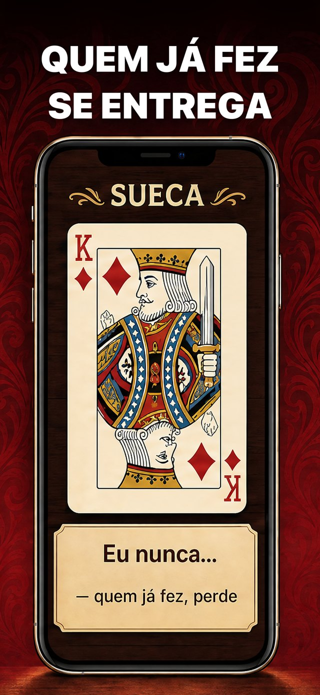
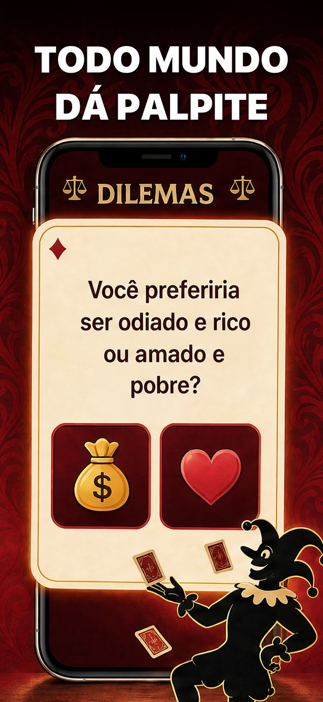
- 2ª geração escolhida (cartão transborda o celular). O Coringa fica cortado na altura das pernas porque o celular manda no enquadramento.
Status
- 20/10/2026 — gerado pela API, cortado e publicado pra validação (só pt-BR).